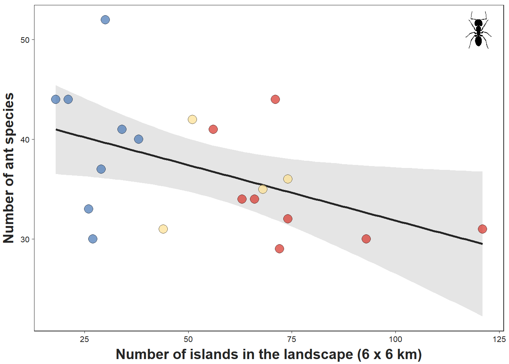
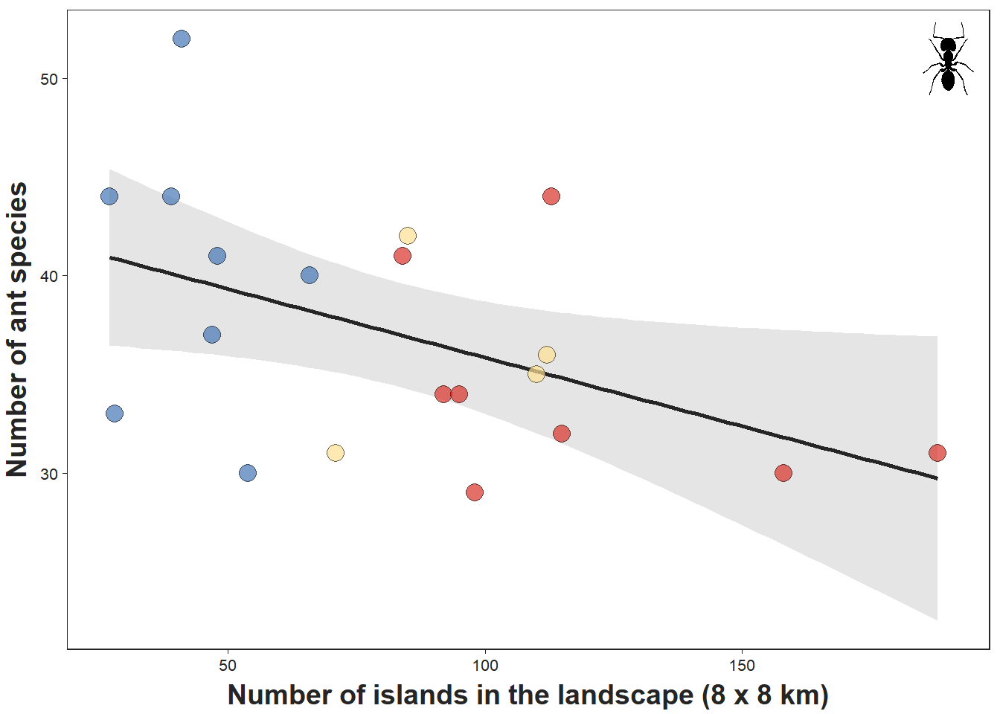
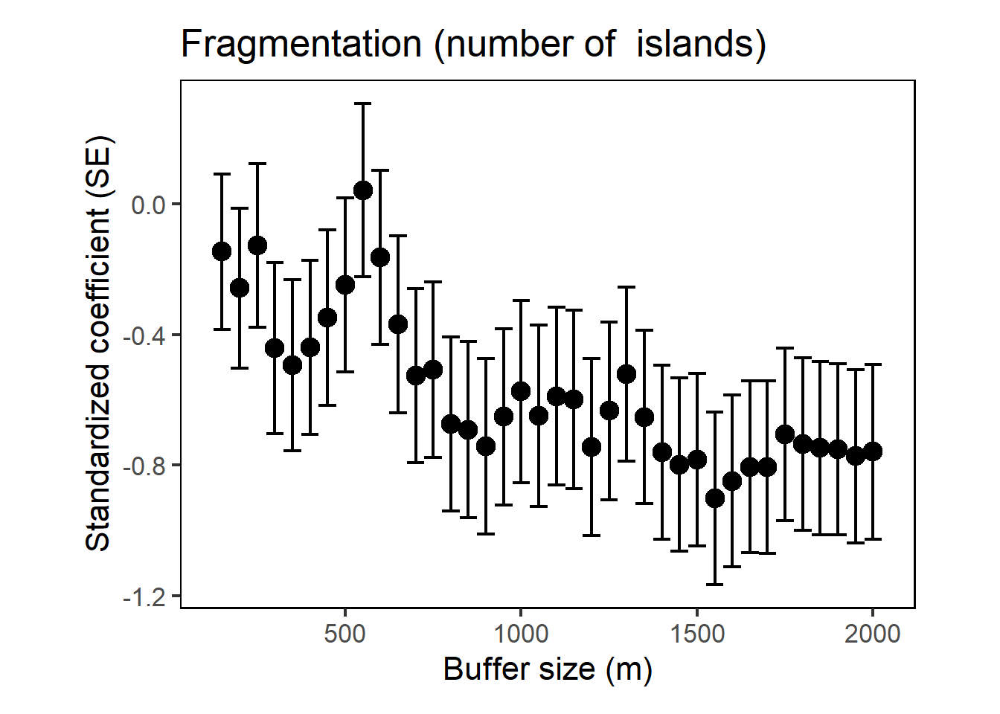

rm(list = ls()); gc()
set.seed(13)
# Load packages
library(raster)
library(terra)
library(landscapemetrics)
library(ggplot2)
library(dplyr)
library(MuMIn)
library(ggimage)
library(sf)
setwd("C:/Users/ivana/OneDrive/PhD_INPA/2.SLOSS_question/Code_paper_SLOSS")
Balbina <- raster("Balbina_mapbiomas_collection8_2022.tif")
new_crs <- CRS("+proj=utm +south +zone=21 +datum=WGS84 +units=m +no_defs")
Balbina <- projectRaster(Balbina, crs = new_crs)
values(Balbina) = as.integer(values(Balbina))
check_landscape(Balbina)
forest_formation <- Balbina == 3
forest_formation <- projectRaster(forest_formation, crs = new_crs)
values(forest_formation) = as.integer(values(forest_formation))
check_landscape(forest_formation)8 Changes in landscape size
To evaluate the robustness of our results to changes in landscape size, we conducted two analyses:
- We enlarged the landscapes by adding 2 km and 4 km around the edges, creating landscapes of 6 x 6 km and 8 x 8 km, and repeated the gamma diversity analysis.
- We fit simple linear regressions relating point-scale ant richness (alpha diversity) to habitat amount and fragmentation in landscapes defined as circular buffers surrounding the points. We did this at multiple spatial extents, from 150-m to 2000-m radius buffers in 50 m increments.
8.1 Landscapes of 6x6km and 8x8km
8.1.1 Loading packages and importing data
8.1.2 6x6 km landscapes: Calculating forest amount and number of islands
landscapes6km <- vect("6km_paisagem.shp")
names(landscapes6km)
forest_cover <- landscapemetrics::sample_lsm(
forest_formation,
y = landscapes6km,
what = "lsm_c_pland",
directions = 8,
plot_id = landscapes6km$name
)
forest_cover <- subset(forest_cover, forest_cover$class == 1) # Select only the presence of forest
number_patches <- landscapemetrics::sample_lsm(forest_formation,
y = landscapes6km,
what = "lsm_c_np",
directions = 8,
plot_id = landscapes6km$name)
number_patches <- subset(number_patches, number_patches$class == 1) # Select only the presence of patches
number_patches$plot_id == forest_cover$plot_id
metrics <- as.data.frame(cbind(number_patches$plot_id, number_patches$value,
forest_cover$value))
colnames(metrics) <- c("id", "number_patches", "forest_cover")
metrics$type <- NA
metrics$type[1:8] <- "#4575b4" #landscapes with few large patches
metrics$type[9:12] <- "#fee090" #landscapes with several medium-sized patches
metrics$type[13:20] <- "#d73027" #landscapes with many small patches
comm <- read.csv("ants_comm.csv", header = T)
comm <- comm[-201,]
env <- read.csv("sampled_lands.csv", header = T)
complete <- merge(comm, env, by = "point_ID")
complete <- complete[,c(1,147:154,2:145)]
# Calculating gamma diversity - species richness in the landscapes
complete$landscape <- as.factor(complete$landscape)
comm_landscape <- complete[,-c(1,5)] %>%
group_by(landscape) %>%
summarise(
across(c(number_patches, forest_cover, long, lat), first),
across(c(patch_area), mean), #mean patch size by landscape
across(
where(is.numeric) &
!all_of(c("number_patches", "forest_cover", "long", "lat", "patch_area")),
sum
),
.groups = "drop"
)
comm_landscape[,c(7:150)] <-
comm_landscape[,c(7:150)] %>%
mutate(across(where(is.numeric), ~ ifelse(. > 0, 1, 0)))8.1.3 6x6 km landscapes: Fitting the models
#|code-overflow: wrap
any(comm_landscape[, 7:150] > 1) #checking if any value is higher than 1 (presence)[1] FALSEcomm_landscape$richness <- rowSums(comm_landscape[,7:150]) # richness by landscape
landscapes <- comm_landscape[,c(1:3,6,151)]
colnames(landscapes)[4] <- "mean_patch_area"
comm_landscape$number_patches6km <- as.numeric(metrics$number_patches)
comm_landscape$forest_cover6km <- as.numeric(metrics$forest_cover)
cor.test(comm_landscape$number_patches6km, comm_landscape$forest_cover6km) #cor = -0.28
Pearson's product-moment correlation
data: comm_landscape$number_patches6km and comm_landscape$forest_cover6km
t = -1.2557, df = 18, p-value = 0.2253
alternative hypothesis: true correlation is not equal to 0
95 percent confidence interval:
-0.6452772 0.1815243
sample estimates:
cor
-0.2837931 mod_global6km <- lm(richness ~ number_patches6km + forest_cover6km, data = comm_landscape, na.action = na.fail)
summary(mod_global6km)
Call:
lm(formula = richness ~ number_patches6km + forest_cover6km,
data = comm_landscape, na.action = na.fail)
Residuals:
Min 1Q Median 3Q Max
-8.9329 -3.4806 -0.2574 2.2753 11.8844
Coefficients:
Estimate Std. Error t value Pr(>|t|)
(Intercept) 35.18562 7.29345 4.824 0.000159 ***
number_patches6km -0.09513 0.04945 -1.924 0.071294 .
forest_cover6km 0.17714 0.15239 1.162 0.261147
---
Signif. codes: 0 '***' 0.001 '**' 0.01 '*' 0.05 '.' 0.1 ' ' 1
Residual standard error: 5.552 on 17 degrees of freedom
Multiple R-squared: 0.288, Adjusted R-squared: 0.2042
F-statistic: 3.437 on 2 and 17 DF, p-value: 0.05576models1 <- dredge(mod_global6km)Fixed term is "(Intercept)"models1Global model call: lm(formula = richness ~ number_patches6km + forest_cover6km,
data = comm_landscape, na.action = na.fail)
---
Model selection table
(Int) frs_cv6 nmb_pt6 df logLik AICc delta weight
3 43.00 -0.11140 3 -61.802 131.1 0.00 0.492
4 35.19 0.1771 -0.09513 4 -61.038 132.7 1.64 0.217
2 26.81 0.2603 3 -63.007 133.5 2.41 0.148
1 37.00 2 -64.434 133.6 2.47 0.143
Models ranked by AICc(x) 8.1.4 6X6 km landscapes: Plotting the graph
#|code-overflow: wrap
comm_landscape$cor <- NA
comm_landscape$cor[1:8] <- "#4575b4"
comm_landscape$cor[9:12] <- "#fee090"
comm_landscape$cor[13:20] <- "#d73027"
plot_6km <-
ggplot(data = comm_landscape,
mapping = aes(x = number_patches6km, y = richness)) +
geom_smooth(method = "lm", fill = "#cccccc", alpha = 0.5,
color = "#252525") +
labs(x = "Number of islands in the landscape (6 x 6 km)",
y = "Number of ant species") +
geom_image(
data = tibble(number_patches6km = 120, richness = 51),
aes(image = "ant_1.png"), size = 0.08
) + # https://www.phylopic.org/images/3ae7cb42-8904-4775-87d6-968255913711/camponotus-vagus
geom_point(size = 4, shape = 21,
color = "#252525", fill = comm_landscape$cor,
alpha = 0.7) +
theme_bw(base_size = 10) +
theme(panel.grid = element_blank(),
panel.border = element_rect(colour = "#252525"),
axis.title = element_text(colour = "#252525", face = "bold", size = 14),
axis.title.x = element_text(vjust = 0, size = 14),
axis.title.y = element_text(vjust = 2, size = 14),
axis.text = element_text(colour = "#252525"),
axis.ticks = element_line(colour = "#252525", size = 0.25))Warning: The `size` argument of `element_line()` is deprecated as of ggplot2 3.4.0.
ℹ Please use the `linewidth` argument instead.plot_6km`geom_smooth()` using formula = 'y ~ x'
8.1.5 8x8 km landscapes: Calculating forest amount and number of islands
landscapes8km <- vect("paisagem_da_paisagem.shp")
names(landscapes8km)
forest_cover <- landscapemetrics::sample_lsm(
forest_formation,
y = landscapes8km,
what = "lsm_c_pland",
directions = 8,
plot_id = landscapes8km$name
)
forest_cover <- subset(forest_cover, forest_cover$class == 1) # Select only the presence of forest
number_patches <- landscapemetrics::sample_lsm(forest_formation,
y = landscapes8km,
what = "lsm_c_np",
directions = 8,
plot_id = landscapes8km$name)
number_patches <- subset(number_patches, number_patches$class == 1) # Select only the presence of patches
number_patches$plot_id == forest_cover$plot_id
metrics2 <- as.data.frame(cbind(number_patches$plot_id, number_patches$value,
forest_cover$value))
colnames(metrics2) <- c("id", "number_patches", "forest_cover")
comm_landscape$number_patches8km <- as.numeric(metrics2$number_patches)
comm_landscape$forest_cover8km <- as.numeric(metrics2$forest_cover)
cor.test(comm_landscape$number_patches8km, comm_landscape$forest_cover8km)8.1.6 8x8 km landscapes: Fitting the models
#|code-overflow: wrap
mod_global8km <- lm(richness ~ number_patches8km + forest_cover8km, data = comm_landscape, na.action = na.fail)
summary(mod_global8km)
Call:
lm(formula = richness ~ number_patches8km + forest_cover8km,
data = comm_landscape, na.action = na.fail)
Residuals:
Min 1Q Median 3Q Max
-7.7592 -4.5116 -0.4453 2.8471 10.6874
Coefficients:
Estimate Std. Error t value Pr(>|t|)
(Intercept) 31.46629 6.54195 4.810 0.000163 ***
number_patches8km -0.05135 0.03001 -1.711 0.105237
forest_cover8km 0.24385 0.12853 1.897 0.074921 .
---
Signif. codes: 0 '***' 0.001 '**' 0.01 '*' 0.05 '.' 0.1 ' ' 1
Residual standard error: 5.261 on 17 degrees of freedom
Multiple R-squared: 0.3606, Adjusted R-squared: 0.2854
F-statistic: 4.795 on 2 and 17 DF, p-value: 0.02232models2 <- dredge(mod_global8km)Fixed term is "(Intercept)"models2Global model call: lm(formula = richness ~ number_patches8km + forest_cover8km,
data = comm_landscape, na.action = na.fail)
---
Model selection table
(Int) frs_cv8 nmb_pt8 df logLik AICc delta weight
4 31.47 0.2438 -0.05135 4 -59.961 130.6 0.00 0.341
2 24.34 0.3143 3 -61.550 130.6 0.01 0.339
3 42.81 -0.06958 3 -61.881 131.3 0.67 0.243
1 37.00 2 -64.434 133.6 2.99 0.077
Models ranked by AICc(x) 8.1.7 8X8 km landscapes: Plotting the graph
#|code-overflow: wrap
plot_8km <-
ggplot(data = comm_landscape,
mapping = aes(x = number_patches8km, y = richness)) +
geom_smooth(method = "lm", fill = "#cccccc", alpha = 0.5,
color = "#252525") +
labs(x = "Number of islands in the landscape (8 x 8 km)",
y = "Number of ant species") +
geom_image(
data = tibble(number_patches8km = 190, richness = 51),
aes(image = "ant_1.png"), size = 0.08
) + # https://www.phylopic.org/images/3ae7cb42-8904-4775-87d6-968255913711/camponotus-vagus
geom_point(size = 4, shape = 21,
color = "#252525", fill = comm_landscape$cor,
alpha = 0.7) +
theme_bw(base_size = 10) +
theme(panel.grid = element_blank(),
panel.border = element_rect(colour = "#252525"),
axis.title = element_text(colour = "#252525", face = "bold", size = 14),
axis.title.x = element_text(vjust = 0, size = 14),
axis.title.y = element_text(vjust = 2, size = 14),
axis.text = element_text(colour = "#252525"),
axis.ticks = element_line(colour = "#252525", size = 0.25))
plot_8km`geom_smooth()` using formula = 'y ~ x'
8.2 Circular buffers surroundind the points
8.2.1 Loading packages and importing data
data <- read.csv("ants_env.csv")
comm <- read.csv("ants_comm.csv", row.names = 1)
comm <- comm[-201,]
richness <- as.data.frame(rowSums(ifelse(comm > 0, 1, 0)))
richness$point_ID <- row.names(richness)
colnames(richness)[1] <- "richness"
new_crs <- CRS("+proj=utm +south +zone=21 +datum=WGS84 +units=m +no_defs")
point_ants <- st_as_sf(data, coords = c("long_utm", "lat_utm"), crs = new_crs)
point_ants$landscape <- as.factor(point_ants$landscape)
forest <- raster("forest_formation.tif")
any(comm > 1) #checking if any value is higher than 1 (presence)
point_ants$richness <- NA
point_ants$richness <-
richness$richness[match(point_ants$point_ID, richness$point_ID)]8.2.2 Calculating forest amount and number of islands inside the buffers
buffers <- seq(150, 2000, by = 50)
for (b in buffers) {
result <- landscapemetrics::sample_lsm(
forest,
y = point_ants,
plot_id = point_ants$point_ID,
size = b,
shape = "circle",
what = "lsm_c_pland",
directions = 8
)
# selecting only forest
result <- subset(result, class == 1)
result$value <- scale(result$value)
# colname
nome_coluna <- paste0("forest_cover_", b)
# adding to the dataset
point_ants[[nome_coluna]] <-
result$value[match(point_ants$point_ID, result$plot_id)]
}
for (b in buffers) {
result_2 <- landscapemetrics::sample_lsm(
forest,
y = point_ants,
plot_id = point_ants$point_ID,
size = b,
shape = "circle",
what = "lsm_c_np",
directions = 8
)
result_2 <- subset(result_2, class == 1)
result_2$value <- scale(result_2$value)
nome_coluna <- paste0("number_patches_", b)
point_ants[[nome_coluna]] <-
result_2$value[match(point_ants$point_ID, result_2$plot_id)]
}8.2.3 Calculating multiple regressions with forest amount and number of patches on the same scale
#|code-overflow: wrap
reg_mult <- lapply(buffers, function(b) {
forest_cover <- paste0("forest_cover_", b)
number_patch <- paste0("number_patches_", b)
formula <- as.formula(
paste("richness ~", forest_cover, "+", number_patch)
)
mod <- lm(formula, data = point_ants)
s <- summary(mod)
coefs <- as.data.frame(coef(s))
coefs$term <- rownames(coefs)
coefs$buffer <- b
coefs$r2 <- s$r.squared
coefs$r2_adj <- s$adj.r.squared
coefs$p_model <- pf(s$fstatistic[1],
s$fstatistic[2],
s$fstatistic[3],
lower.tail = FALSE)
rownames(coefs) <- NULL
coefs
})
reg_mult_df <- bind_rows(reg_mult)
print(reg_mult_df) Estimate Std. Error t value Pr(>|t|) term buffer
1 7.19500000 0.2278924 31.5719223 5.254638e-79 (Intercept) 150
2 0.44643191 0.2381973 1.8742104 6.238176e-02 forest_cover_150 150
3 -0.14522534 0.2381973 -0.6096850 5.427731e-01 number_patches_150 150
4 7.19500000 0.2253545 31.9274750 8.284702e-80 (Intercept) 200
5 0.55541525 0.2448655 2.2682459 2.439883e-02 forest_cover_200 200
6 -0.25719145 0.2448655 -1.0503375 2.948497e-01 number_patches_200 200
7 7.19500000 0.2252918 31.9363638 7.912210e-80 (Intercept) 250
8 0.63645714 0.2504258 2.5414999 1.180767e-02 forest_cover_250 250
9 -0.12623074 0.2504258 -0.5040644 6.147794e-01 number_patches_250 250
10 7.19500000 0.2229358 32.2738698 1.388287e-80 (Intercept) 300
11 0.51502605 0.2627070 1.9604581 5.135211e-02 forest_cover_300 300
12 -0.44171590 0.2627070 -1.6814014 9.426959e-02 number_patches_300 300
13 7.19500000 0.2225804 32.3253959 1.065529e-80 (Intercept) 350
14 0.48440563 0.2622878 1.8468475 6.626915e-02 forest_cover_350 350
15 -0.49441468 0.2622878 -1.8850081 6.090096e-02 number_patches_350 350
16 7.19500000 0.2232732 32.2250977 1.783883e-80 (Intercept) 400
17 0.49194338 0.2665264 1.8457584 6.642795e-02 forest_cover_400 400
18 -0.43934331 0.2665264 -1.6484043 1.008636e-01 number_patches_400 400
19 7.19500000 0.2239483 32.1279554 2.941571e-80 (Intercept) 450
20 0.53275442 0.2688629 1.9815095 4.892498e-02 forest_cover_450 450
21 -0.34876043 0.2688629 -1.2971682 1.960904e-01 number_patches_450 450
22 7.19500000 0.2241336 32.1013863 3.373390e-80 (Intercept) 500
23 0.60726138 0.2669872 2.2744961 2.401353e-02 forest_cover_500 500
24 -0.24845421 0.2669872 -0.9305847 3.532074e-01 number_patches_500 500
25 7.19500000 0.2243508 32.0703155 3.959821e-80 (Intercept) 550
26 0.77976438 0.2659262 2.9322591 3.763500e-03 forest_cover_550 550
27 0.04287989 0.2659262 0.1612474 8.720638e-01 number_patches_550 550
28 7.19500000 0.2241726 32.0958012 3.471967e-80 (Intercept) 600
29 0.66711226 0.2671700 2.4969580 1.334604e-02 forest_cover_600 600
30 -0.16376118 0.2671700 -0.6129475 5.406180e-01 number_patches_600 600
31 7.19500000 0.2236941 32.1644600 2.437259e-80 (Intercept) 650
32 0.52788766 0.2712452 1.9461638 5.305744e-02 forest_cover_650 650
33 -0.36784167 0.2712452 -1.3561221 1.766126e-01 number_patches_650 650
34 7.19500000 0.2229483 32.2720595 1.401260e-80 (Intercept) 700
35 0.42205609 0.2676429 1.5769376 1.164143e-01 forest_cover_700 700
36 -0.52556694 0.2676429 -1.9636875 5.097330e-02 number_patches_700 700
37 7.19500000 0.2237728 32.1531523 2.583422e-80 (Intercept) 750
38 0.38888060 0.2686716 1.4474200 1.493688e-01 forest_cover_750 750
39 -0.50714264 0.2686716 -1.8875932 6.055081e-02 number_patches_750 750
40 7.19500000 0.2226141 32.3205068 1.092606e-80 (Intercept) 800
41 0.27114079 0.2668769 1.0159771 3.108864e-01 forest_cover_800 800
42 -0.67379309 0.2668769 -2.5247338 1.236709e-02 number_patches_800 800
43 7.19500000 0.2227760 32.2970188 1.232641e-80 (Intercept) 850
44 0.23323761 0.2697511 0.8646401 3.882880e-01 forest_cover_850 850
45 -0.69157595 0.2697511 -2.5637560 1.110005e-02 number_patches_850 850
46 7.19500000 0.2224551 32.3435999 9.705027e-81 (Intercept) 900
47 0.18821265 0.2686172 0.7006723 4.843343e-01 forest_cover_900 900
48 -0.74212075 0.2686172 -2.7627445 6.274667e-03 number_patches_900 900
49 7.19500000 0.2236841 32.1659031 2.419212e-80 (Intercept) 950
50 0.21932686 0.2703812 0.8111765 4.182433e-01 forest_cover_950 950
51 -0.65221581 0.2703812 -2.4122085 1.677301e-02 number_patches_950 950
52 7.19500000 0.2247275 32.0165571 5.226617e-80 (Intercept) 1000
53 0.23208835 0.2793285 0.8308796 4.070475e-01 forest_cover_1000 1000
54 -0.57389263 0.2793285 -2.0545437 4.124321e-02 number_patches_1000 1000
55 7.19500000 0.2242070 32.0908771 3.561275e-80 (Intercept) 1050
56 0.17659988 0.2782267 0.6347339 5.263385e-01 forest_cover_1050 1050
57 -0.64864884 0.2782267 -2.3313685 2.074499e-02 number_patches_1050 1050
58 7.19500000 0.2246259 32.0310364 4.849974e-80 (Intercept) 1100
59 0.22753654 0.2727541 0.8342187 4.051682e-01 forest_cover_1100 1100
60 -0.58886457 0.2727541 -2.1589580 3.206239e-02 number_patches_1100 1100
61 7.19500000 0.2244841 32.0512723 4.368791e-80 (Intercept) 1150
62 0.22506879 0.2741524 0.8209623 4.126601e-01 forest_cover_1150 1150
63 -0.59824643 0.2741524 -2.1821673 3.028026e-02 number_patches_1150 1150
64 7.19500000 0.2228797 32.2819911 1.331553e-80 (Intercept) 1200
65 0.15017340 0.2708576 0.5544368 5.799088e-01 forest_cover_1200 1200
66 -0.74524098 0.2708576 -2.7514129 6.487423e-03 number_patches_1200 1200
67 7.19500000 0.2239721 32.1245394 2.993820e-80 (Intercept) 1250
68 0.22062358 0.2716045 0.8122972 4.176016e-01 forest_cover_1250 1250
69 -0.63385042 0.2716045 -2.3337258 2.061838e-02 number_patches_1250 1250
70 7.19500000 0.2247288 32.0163674 5.231742e-80 (Intercept) 1300
71 0.30882050 0.2671245 1.1560919 2.490437e-01 forest_cover_1300 1300
72 -0.52163639 0.2671245 -1.9527836 5.226185e-02 number_patches_1300 1300
73 7.19500000 0.2233692 32.2112507 1.915584e-80 (Intercept) 1350
74 0.24781466 0.2656452 0.9328783 3.520248e-01 forest_cover_1350 1350
75 -0.65253809 0.2656452 -2.4564269 1.489843e-02 number_patches_1350 1350
76 7.19500000 0.2222057 32.3799063 8.056245e-81 (Intercept) 1400
77 0.18120310 0.2675406 0.6772920 4.990153e-01 forest_cover_1400 1400
78 -0.76050627 0.2675406 -2.8425828 4.946339e-03 number_patches_1400 1400
79 7.19500000 0.2216746 32.4574784 5.414604e-81 (Intercept) 1450
80 0.16548215 0.2662260 0.6215853 5.349332e-01 forest_cover_1450 1450
81 -0.79850614 0.2662260 -2.9993546 3.054620e-03 number_patches_1450 1450
82 7.19500000 0.2217308 32.4492551 5.647374e-81 (Intercept) 1500
83 0.18424794 0.2644762 0.6966521 4.868417e-01 forest_cover_1500 1500
84 -0.78425087 0.2644762 -2.9652980 3.397483e-03 number_patches_1500 1500
85 7.19500000 0.2201575 32.6811557 1.728062e-81 (Intercept) 1550
86 0.11827540 0.2642093 0.4476580 6.548919e-01 forest_cover_1550 1550
87 -0.90114945 0.2642093 -3.4107408 7.859544e-04 number_patches_1550 1550
88 7.19500000 0.2207528 32.5930145 2.708530e-81 (Intercept) 1600
89 0.15891159 0.2633946 0.6033213 5.469890e-01 forest_cover_1600 1600
90 -0.84840719 0.2633946 -3.2210497 1.494275e-03 number_patches_1600 1600
91 7.19500000 0.2212577 32.5186350 3.960208e-81 (Intercept) 1650
92 0.18813831 0.2634546 0.7141206 4.759979e-01 forest_cover_1650 1650
93 -0.80512052 0.2634546 -3.0560129 2.553917e-03 number_patches_1650 1650
94 7.19500000 0.2212296 32.5227762 3.877263e-81 (Intercept) 1700
95 0.18676097 0.2647456 0.7054357 4.813724e-01 forest_cover_1700 1700
96 -0.80634413 0.2647456 -3.0457322 2.638743e-03 number_patches_1700 1700
97 7.19500000 0.2223117 32.3644673 8.719905e-81 (Intercept) 1750
98 0.25245068 0.2650796 0.9523582 3.420824e-01 forest_cover_1750 1750
99 -0.70562068 0.2650796 -2.6619204 8.411173e-03 number_patches_1750 1750
100 7.19500000 0.2218350 32.4340166 6.105619e-81 (Intercept) 1800
101 0.24531041 0.2649983 0.9257054 3.557317e-01 forest_cover_1800 1800
102 -0.73496470 0.2649983 -2.7734691 6.079157e-03 number_patches_1800 1800
103 7.19500000 0.2214439 32.4913006 4.554229e-81 (Intercept) 1850
104 0.25384755 0.2647758 0.9587264 3.388717e-01 forest_cover_1850 1850
105 -0.74791907 0.2647758 -2.8247259 5.218953e-03 number_patches_1850 1850
106 7.19500000 0.2210594 32.5478072 3.411763e-81 (Intercept) 1900
107 0.27721641 0.2627172 1.0551894 2.926311e-01 forest_cover_1900 1900
108 -0.75098612 0.2627172 -2.8585341 4.713856e-03 number_patches_1900 1900
109 7.19500000 0.2206193 32.6127366 2.449236e-81 (Intercept) 1950
110 0.27167358 0.2657909 1.0221329 3.079716e-01 forest_cover_1950 1950
111 -0.77227884 0.2657909 -2.9055883 4.084934e-03 number_patches_1950 1950
112 7.19500000 0.2204628 32.6358868 2.176479e-81 (Intercept) 2000
113 0.29363091 0.2688568 1.0921461 2.761027e-01 forest_cover_2000 2000
114 -0.75926801 0.2688568 -2.8240609 5.229365e-03 number_patches_2000 2000
r2 r2_adj p_model
1 0.02439158 0.01448692 8.782957e-02
2 0.02439158 0.01448692 8.782957e-02
3 0.02439158 0.01448692 8.782957e-02
4 0.04599985 0.03631457 9.672117e-03
5 0.04599985 0.03631457 9.672117e-03
6 0.04599985 0.03631457 9.672117e-03
7 0.04653083 0.03685094 9.155995e-03
8 0.04653083 0.03685094 9.155995e-03
9 0.04653083 0.03685094 9.155995e-03
10 0.06636848 0.05688999 1.154217e-03
11 0.06636848 0.05688999 1.154217e-03
12 0.06636848 0.05688999 1.154217e-03
13 0.06934249 0.05989419 8.429535e-04
14 0.06934249 0.05989419 8.429535e-04
15 0.06934249 0.05989419 8.429535e-04
16 0.06354027 0.05403307 1.554808e-03
17 0.06354027 0.05403307 1.554808e-03
18 0.06354027 0.05403307 1.554808e-03
19 0.05786874 0.04830396 2.818215e-03
20 0.05786874 0.04830396 2.818215e-03
21 0.05786874 0.04830396 2.818215e-03
22 0.05630857 0.04672794 3.317083e-03
23 0.05630857 0.04672794 3.317083e-03
24 0.05630857 0.04672794 3.317083e-03
25 0.05447912 0.04487992 4.014263e-03
26 0.05447912 0.04487992 4.014263e-03
27 0.05447912 0.04487992 4.014263e-03
28 0.05598011 0.04639615 3.432756e-03
29 0.05598011 0.04639615 3.432756e-03
30 0.05598011 0.04639615 3.432756e-03
31 0.06000604 0.05046296 2.253298e-03
32 0.06000604 0.05046296 2.253298e-03
33 0.06000604 0.05046296 2.253298e-03
34 0.06626374 0.05678418 1.167041e-03
35 0.06626374 0.05678418 1.167041e-03
36 0.06626374 0.05678418 1.167041e-03
37 0.05934477 0.04979497 2.414915e-03
38 0.05934477 0.04979497 2.414915e-03
39 0.05934477 0.04979497 2.414915e-03
40 0.06906091 0.05960976 8.684495e-04
41 0.06906091 0.05960976 8.684495e-04
42 0.06906091 0.05960976 8.684495e-04
43 0.06770637 0.05824146 1.002173e-03
44 0.06770637 0.05824146 1.002173e-03
45 0.06770637 0.05824146 1.002173e-03
46 0.07038980 0.06095214 7.544605e-04
47 0.07038980 0.06095214 7.544605e-04
48 0.07038980 0.06095214 7.544605e-04
49 0.06009039 0.05054816 2.233469e-03
50 0.06009039 0.05054816 2.233469e-03
51 0.06009039 0.05054816 2.233469e-03
52 0.05130124 0.04166978 5.586513e-03
53 0.05130124 0.04166978 5.586513e-03
54 0.05130124 0.04166978 5.586513e-03
55 0.05569038 0.04610348 3.538098e-03
56 0.05569038 0.04610348 3.538098e-03
57 0.05569038 0.04610348 3.538098e-03
58 0.05215875 0.04253599 5.110428e-03
59 0.05215875 0.04253599 5.110428e-03
60 0.05215875 0.04253599 5.110428e-03
61 0.05335523 0.04374462 4.512566e-03
62 0.05335523 0.04374462 4.512566e-03
63 0.05335523 0.04374462 4.512566e-03
64 0.06683818 0.05736445 1.098401e-03
65 0.06683818 0.05736445 1.098401e-03
66 0.06683818 0.05736445 1.098401e-03
67 0.05766837 0.04810155 2.877872e-03
68 0.05766837 0.04810155 2.877872e-03
69 0.05766837 0.04810155 2.877872e-03
70 0.05128999 0.04165842 5.593039e-03
71 0.05128999 0.04165842 5.593039e-03
72 0.05128999 0.04165842 5.593039e-03
73 0.06273497 0.05321959 1.692184e-03
74 0.06273497 0.05321959 1.692184e-03
75 0.06273497 0.05321959 1.692184e-03
76 0.07247331 0.06305679 6.048560e-04
77 0.07247331 0.06305679 6.048560e-04
78 0.07247331 0.06305679 6.048560e-04
79 0.07690152 0.06752996 3.775128e-04
80 0.07690152 0.06752996 3.775128e-04
81 0.07690152 0.06752996 3.775128e-04
82 0.07643360 0.06705729 3.968354e-04
83 0.07643360 0.06705729 3.968354e-04
84 0.07643360 0.06705729 3.968354e-04
85 0.08949407 0.08025036 9.757838e-05
86 0.08949407 0.08025036 9.757838e-05
87 0.08949407 0.08025036 9.757838e-05
88 0.08456285 0.07526908 1.661156e-04
89 0.08456285 0.07526908 1.661156e-04
90 0.08456285 0.07526908 1.661156e-04
91 0.08037033 0.07103399 2.605422e-04
92 0.08037033 0.07103399 2.605422e-04
93 0.08037033 0.07103399 2.605422e-04
94 0.08060451 0.07127055 2.540875e-04
95 0.08060451 0.07127055 2.540875e-04
96 0.08060451 0.07127055 2.540875e-04
97 0.07158817 0.06216267 6.644394e-04
98 0.07158817 0.06216267 6.644394e-04
99 0.07158817 0.06216267 6.644394e-04
100 0.07556555 0.06618043 4.353094e-04
101 0.07556555 0.06618043 4.353094e-04
102 0.07556555 0.06618043 4.353094e-04
103 0.07882234 0.06947028 3.074856e-04
104 0.07882234 0.06947028 3.074856e-04
105 0.07882234 0.06947028 3.074856e-04
106 0.08201810 0.07269848 2.183539e-04
107 0.08201810 0.07269848 2.183539e-04
108 0.08201810 0.07269848 2.183539e-04
109 0.08566972 0.07638718 1.474537e-04
110 0.08566972 0.07638718 1.474537e-04
111 0.08566972 0.07638718 1.474537e-04
112 0.08696641 0.07769703 1.282169e-04
113 0.08696641 0.07769703 1.282169e-04
114 0.08696641 0.07769703 1.282169e-048.2.4 Scale of effect: model with higher adjusted r2
reg_mult_df[order(-reg_mult_df$r2_adj),][1,] # 1550 m Estimate Std. Error t value Pr(>|t|) term buffer r2
85 7.195 0.2201575 32.68116 1.728062e-81 (Intercept) 1550 0.08949407
r2_adj p_model
85 0.08025036 9.757838e-058.2.5 Plotting the graph
# Selecting only the results for number of islands
reg_mult_df_2 <- reg_mult_df[grepl("^number_patches_", reg_mult_df$term), ]
plot1 <-
ggplot(reg_mult_df_2 , aes(x = buffer, y = Estimate)) +
geom_errorbar(aes(ymin = Estimate - `Std. Error`, ymax = Estimate + `Std. Error`), color = 'black', width = 50) +
geom_point(size = 4) +
labs(x = "Buffer size (m)",
y = "Standardized coefficient (SE)",
title = "Fragmentation (number of islands)") +
theme_bw(base_size = 16) +
theme(panel.grid = element_blank(),
panel.border = element_rect(colour = "black"),
plot.margin = margin(0.5, 1.5, 0.5, 1.5, "cm"))
plot1